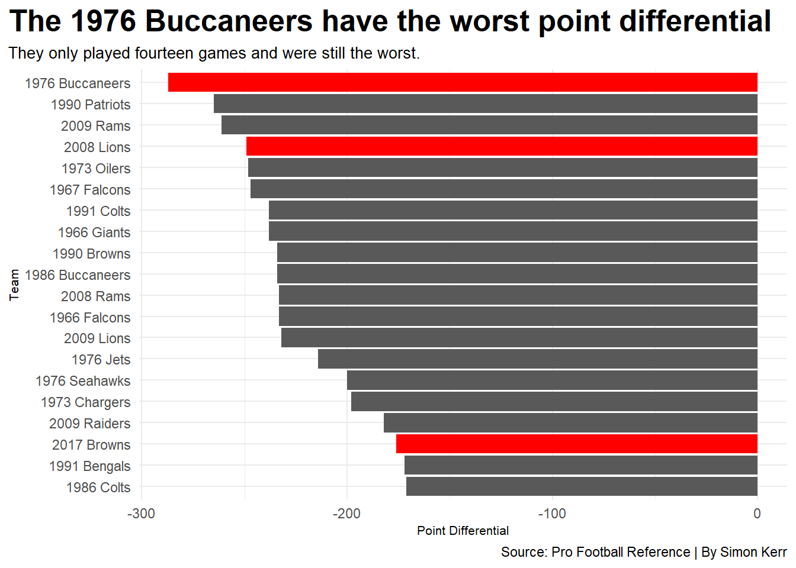
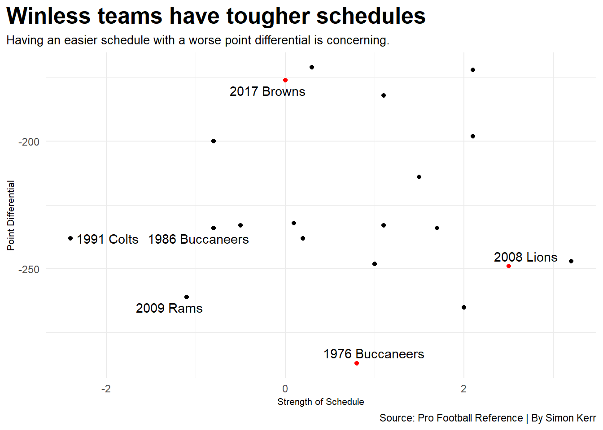

Their is often conversation surrounding the best NFL teams of all time. Fans have something to be proud of and brag about to friends and family. In turn, making fun of someone for having the worst NFL team of all time could be even more enjoyable. Kerry Miller published this article for Bleacher Report in 2020 discussing the 10 worst teams in NFL history. Miller was generous, leaving out teams within the first three years a team came into the league. This eliminates the 1976 Buccaneers and the 1967 Falcons. He also did not list a franchise more than twice. Another notable omission were the winless 2008 Lions. Unlike Miller, this only includes Super Bowl Era teams. This also only examines the seasons listed by Miller and adding the seasons of the omitted teams above (no mercy here). That gives 10 seasons to look at. Is one of the winless teams in the Super Bowl Era the worst NFL team of all time?
Code
library(tidyverse)library(gt)library(ggrepel)stats <-read_csv("Worst Team Stats.csv")no_wins <- stats |>filter(Wins ==0)twenty_worst <- stats |>filter(PointDifferential <=-171)ggplot() +geom_bar(data=twenty_worst, aes(x=reorder(Team, -PointDifferential), weight=PointDifferential)) +geom_bar(data=no_wins, aes(x=reorder(Team, -PointDifferential), weight=PointDifferential), fill="red") +coord_flip() +labs(title ="The 1976 Buccaneers have the worst point differential",subtitle ="They only played fourteen games and were still the worst.",caption ="Source: Pro Football Reference | By Simon Kerr",x ="Team",y ="Point Differential" ) +theme_minimal() +theme(plot.title =element_text(size =19, face ="bold"),axis.title =element_text(size =8),plot.subtitle =element_text(size =10),plot.title.position ="plot" )

Leading the way, the 1976 Buccaneers have the worst point differential in NFL history at an astounding -287! To make it worse, the regular season consisted of only 14 games at the time. That means the Bucs were losing games by an average of nearly 21 points! The other winless teams are notably in the top 20 of worst scoring differential for the 10 seasons.
Point differential does not mean everything because teams may play harder schedules than others. To examine which teams performed worse with an easier schedule, Strength of Schedule (SOS) can be used. Pro Football Reference states, “Strength of Schedule indicates the combined winning percentages of the opponents this team played in a given year.” So a higher SOS, the tougher the schedule and vice versa. Maybe the 1976 Buccaneers just had a tough schedule.
Code
bad <- twenty_worst |>filter(StrengthOfSchedule <=-.8& PointDifferential <=-225)ggplot() +geom_point(data=twenty_worst, aes(x=StrengthOfSchedule, y=PointDifferential)) +geom_point(data=no_wins, aes(x=StrengthOfSchedule, y=PointDifferential), colour="red") +geom_text_repel(data=no_wins, aes(x=StrengthOfSchedule, y=PointDifferential, label=Team)) +geom_text_repel(data=bad, aes(x=StrengthOfSchedule, y=PointDifferential, label=Team)) +labs(title ="Winless teams have tougher schedules",subtitle ="Having an easier schedule with a worse point differential is concerning.",caption ="Source: Pro Football Reference | By Simon Kerr",x ="Strength of Schedule",y ="Point Differential") +theme_minimal() +theme(plot.title =element_text(size =19, face ="bold"),axis.title =element_text(size =8),plot.subtitle =element_text(size =10),plot.title.position ="plot" )

Compared to the terrible point differential teams, the Bucs had a tougher schedule than most. All three winless teams had average or above average SOSs. So their opponents factored in to their disappointing seasons. Considering the strength of schedule aspect, the 2009 Rams, the 1991 Colts, and the 1986 Buccaneers enter the picture as awful teams. These three teams have the fourth, twelfth, and fifteenth worst point differentials in NFL history respectively. So they are outstanding candidates to be the worst team in NFL history. Miller also has these teams in his top 10 of worst teams.
SOS helps explain why some teams SOS is so bad, but it also displays that these Colts and Rams teams were very bad. To help determine how bad a team truly is, the Simple Rating System (SRS) can be used. According to Pro Football Reference, “SRS is a rating that takes into account average point differential and strength of schedule.” So by combining the last two metrics used, a new stat can quantify how bad a team is. Another way to think of SRS could be a point spread. For example, the 1976 Buccaneers SRS is -19.7. That means the Bucs would be almost 20 point underdogs to an average team in 1976. Now to compare across seasons, z-scores will be used.
Code
statswseason <- stats |>separate(Team, into=c("Season", "Team"), sep=" ")zscore <- statswseason |>group_by(Season) |>mutate(SimpleRatingSystemzscore =as.numeric(scale(SimpleRatingSystem, center =TRUE, scale =TRUE)) ) |>arrange(SimpleRatingSystemzscore) |>select(Team, Wins, Losses, Ties, PointDifferential, SimpleRatingSystemzscore)fullzscore <- zscore |>unite(Team, Season, Team, sep=" ") |>head(15)fullzscore |>gt() |>cols_label(PointDifferential ="Point Differential", SimpleRatingSystemzscore ="Simple Rating System Z-Score") |>tab_header(title ="How do these disappointing teams compare across seasons?",subtitle ="Within the context of their season, the 1986 Buccaneers were way below their competition." ) |>tab_style(style =cell_text(color ="black", weight ="bold", align ="left"),locations =cells_title("title") ) |>tab_style(style =cell_text(color ="black", align ="left"),locations =cells_title("subtitle") ) |>opt_row_striping() |>tab_style(style =list(cell_fill(color ="red"),cell_text(color ="white") ),locations =cells_body(rows = Wins ==0) ) |>tab_source_note(source_note =md("**By:** Simon Kerr | **Source:** Pro Football Reference") )
How do these disappointing teams compare across seasons?
Within the context of their season, the 1986 Buccaneers were way below their competition.
Team
Wins
Losses
Ties
Point Differential
Simple Rating System Z-Score
1986 Buccaneers
2
14
0
-234
-2.575669
1990 Patriots
1
15
0
-265
-2.435333
1991 Colts
1
15
0
-238
-2.427438
2009 Rams
1
15
0
-261
-2.378783
2008 Rams
2
14
0
-233
-2.300124
1976 Buccaneers
0
14
0
-287
-2.247836
1990 Browns
3
13
0
-234
-2.168382
1973 Oilers
1
13
0
-248
-2.082320
2008 Lions
0
16
0
-249
-1.995472
2009 Lions
2
14
0
-232
-1.968722
1966 Giants
1
12
1
-238
-1.948598
1967 Falcons
1
12
1
-247
-1.912640
2017 Browns
0
16
0
-176
-1.837867
1966 Falcons
3
11
0
-233
-1.797874
1986 Colts
3
13
0
-171
-1.739219
By: Simon Kerr | Source: Pro Football Reference
Even when standardizing across the seasons, the three teams just mentioned are in the top four of the list. The 1990 Patriots are there too, but a SOS of 2.0 justifies their point differential. Notably, the winless teams are not at the top of this list. This could mean that the point differentials of those seasons were all mediocre.
Miller lists the 1990 Patriots as his worst Super Bowl Era team, but clearly their SOS contributed to their 15 loss season. Looking across all three charts, the 2009 Rams jump out as the worst team. The fourth worst point differential of all time combined with a relatively easy schedule makes their one win look pitiful. The Rams are Miller’s second worst Super Bowl Era team, so there is a case for the worst.
However, the winless teams in NFL history will be remembered for their records. From the outside looking in, they may seem like the worst teams ever. Their SOS and context within their respective seasons say otherwise.